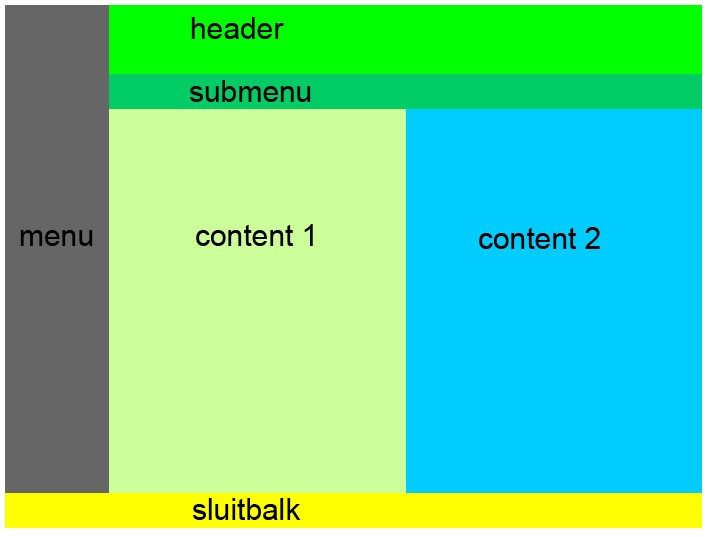

Positioneren vervolg
Om de werking van float goed door te krijgen is het van belang dat je begrijpt dat je niet links of rechts aan het uitlijnen bent, maar het als ware links of rechts naar de zijkant aan het duwen bent. Dit om er nog andere onderdelen naast te passen.
De opdracht die nu volgt is het van belang dat je goed kijkt welke divisies allemaal naast elkaar moeten staan. Het is van belang dat je van links naar rechts en boven naar beneden werkt.
| Opdracht 1: namaken |
|
Open een nieuw HTML 5 bestand.
Sla het bestand op als Opdracht17-1.html. |
| Voorbeeld 1 |
|  |
Puzzel
In de vorige opdracht hebben we de divisies verschillende achtergrondkleuren gegeven. Dit deden we zodat we goed konden zien waar de verschillende divisies stonden. Normaal gesproken gebruik je geen kleur maar een afbeelding voor de divisie.
De CSS code om aan een divisie een achtergrond plaatje toe te voegen is: background-image: URL;
| Voorbeeld 2 |
| Opdracht 2: Puzzel |
|
In voorbeeld 2 staat een puzzel met 10 stukjes afgebeeld. Deze 10 stukjes vindt je hier. Sla de plaatjes op in de map images in dezelfde map als je html bestanden. Open een nieuw HTML 5 bestand.
Sla het bestand op als Opdracht17-2.html. |